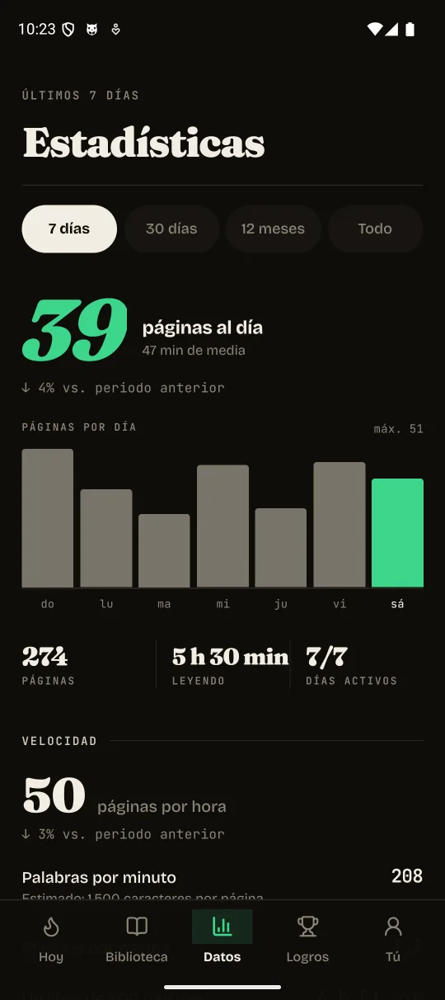
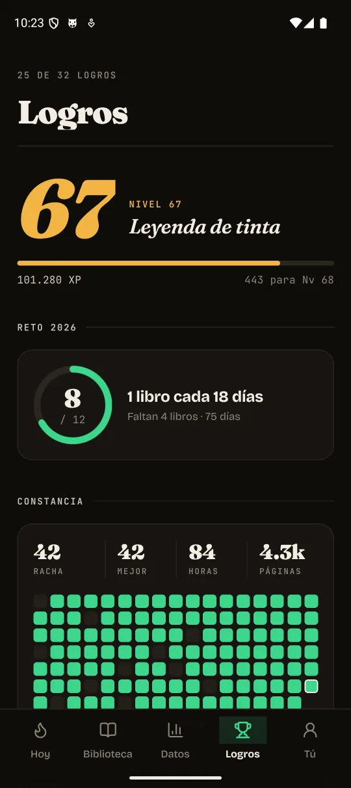
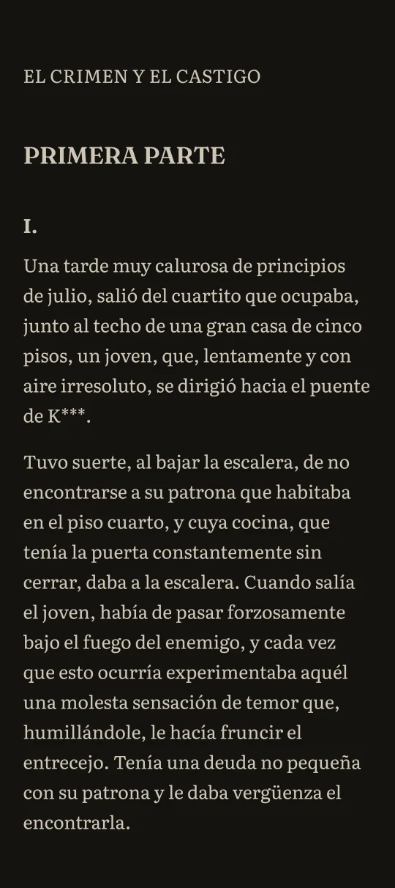
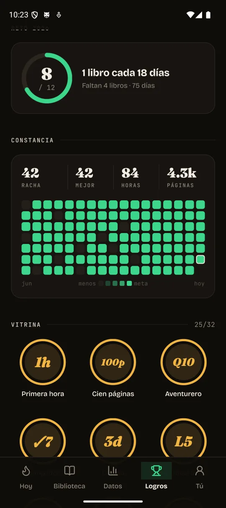

Tu próximo vicio se lee
Un lector de Android para cambiar «cinco minutos de scroll» por «un capítulo más». Tus libros, pequeños retos y ganas de volver.
Gratis · Código abierto · Sin cuenta

Ávido en 33 segundos
El truco es
el mismo
Ahora ganas tú
Silicon Valley aprendió a hacer que volvieras una y otra vez. Las rachas, las recompensas y ese pequeño impulso de «solo un poco más» convirtieron tu atención en su negocio.
¿Y si esas ganas de volver fueran para leer? Ávido pone los retos, las rachas y las recompensas al servicio de tus libros. Cada sesión suma progreso, XP y motivos para continuar donde lo dejaste.
El diseño del hábito, explicadoCambia quién gana
Tu libro te espera
Unas páginas, a tu ritmo
Una historia que avanza contigo
Que las ganas de volver te lleven a una historia que tú elegiste. Tú decides cuándo empezar y cuándo parar.
Abre un libro
Encuentra tu ritmo
EPUB / PDF / TXT / MD
- Todos tus libros en su sitio
- Elige una carpeta y lee EPUB, PDF, TXT o Markdown. Tu posición se guarda para volver justo donde lo dejaste.
- Progreso que se siente
- XP, niveles, rachas con comodines, tres misiones diarias y 32 logros. Un pequeño empujón para esa gran historia.
- Cómodo, a tu manera
- Cuatro tipografías de lectura, seis temas, ajustes de tamaño y márgenes. Modo e-ink y lectura sin controles visibles.
- Siempre hay otro libro
- Descubre clásicos con Project Gutenberg. Descárgalos y sigue leyendo sin conexión. Comprueba sus derechos en tu país.
Cada página cuenta

Todos tus libros, a mano
Busca por título o autor y retoma tus lecturas pendientes.

Mira cómo crece tu hábito
Páginas por día, tiempo de lectura y tus horas favoritas.

Celebra cada paso
Rachas, niveles, logros y un reto anual a tu medida.

Lee como más te guste
Elige la letra, el tema y los márgenes.

Tus sesiones, al detalle
Consulta la duración de tus sesiones y tus horas de lectura.

Tus logros, uno a uno
Descubre qué has conseguido y qué te queda por desbloquear.
Tu biblioteca
Tu vida privada
Una biblioteca necesita libros. No necesita un perfil publicitario sobre ti.
- Sin cuenta
- Abre la app y lee. Sin registro ni inicio de sesión.
- Sin anuncios ni rastreadores
- Sin interrupciones para venderte algo. Sin medir tus lecturas para hacer negocio con ellas.
- Progreso en tu dispositivo
- Tus libros, tu posición y tus logros se quedan en el dispositivo. No necesitas entregarlos a una nube para disfrutar de ellos.
Para buscar y descargar clásicos, Descubrir necesita conectarse a servicios externos. Consulta la guía si quieres conocer todos los detalles sobre datos, permisos y copias del dispositivo.
Lee cómo funciona la privacidadTu próximo capítulo
empieza aquí
La descarga es un archivo APK que se instala directamente en tu móvil Android.
Descargar para AndroidVer todas las versionesDescarga el APK
Pulsa Descargar para Android. Si el navegador te pregunta, confirma que quieres guardar avido.apk.
Ábrelo e instala
Abre el archivo descargado. Si Android lo pide, entra en Ajustes y permite instalar desde ese navegador o gestor de archivos. Vuelve y pulsa Instalar. Puedes quitar ese permiso después.
Elige tus libros
Abre Ávido y selecciona tu carpeta de libros. ¿Todavía no tienes ninguno? Entra en Descubrir para buscar clásicos.
Antes de pasar página
¿Es gratis de verdad?
Sí. El código se publica con licencia MIT. Puedes usarlo, estudiarlo, modificarlo y contribuir. Los libros tienen sus propios derechos.
¿Funciona sin internet?
Puedes leer los libros que ya tienes en el dispositivo sin conexión. Buscar y descargar libros en Descubrir sí necesita internet.
¿Tengo que mantener una racha?
Tú decides cómo leer. La lectura empieza sin temporizador; puedes elegir un aviso de 5, 15 o 30 minutos. Los logros acompañan tu progreso, no bloquean el lector.
¿Y para iPhone?
De momento, Ávido está disponible para Android.
¿Cómo actualizo?
Descarga la nueva versión e instálala sobre la anterior. Evita desinstalar para conservar tu progreso. Si Android no acepta la actualización, consulta las notas de esa versión.